Common name in Tamil : Tipparathai
Common name in Telugu : Thanduga, kadavi, kadivi, than
Common name in Singhalese : Bariya, beriya
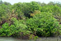
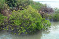
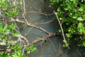
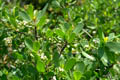
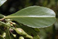
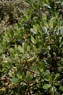
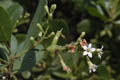
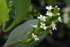
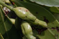
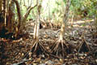
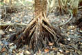
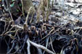
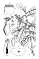
Diagnostic characters
Botany & morphology
Regeneration
Reproductive biology
Ecology
Distribution
Uses
Evergreen trees. Leaves spirally arranged. Flowers in short terminal spikes; fruits 1-seeded pseudocarp.
Leaves crowded at branch endings, simple, alternate, sub - sessile, oblong or oblanceolate - obovate, apex emarginate, base cuneate, entire, 4 - 8 x 1.5 - 3.5 cm, glabrous, mid-nerve prominent below.
Inflorescence axillary spikes.
Flowers small, white, bisexual, sessile, regular, 7 – 8 mm long; calyx 5 lobed; petals 5, free; stamens 10, in 2 series; ovary 4-5 carpillary, stigma simple.
Fruit 1-seeded, drupe, compressed, elliptic - oblong, woody with persistent calyx - lobes, apex pointed.
Pneumatophores sometimes developed as looping lateral roots.
Tree architecture shows Attim’s model.
Hypogeal germination.
Pollination by day-active wasps, bees, butterflies and moths.
Common in mangrove swamps, muddy or sandy elevated fringe areas in estuarine and backwater mangroves. Often found associated with Ceriops and Avicennia.
Tropical E. Africa to N. Australia and Polynesia through India, in south western part of Sri Lanka, and S.E. Asia. In India, along the coasts from Sunderbans downwards and up to Maharashtra, and in the tidal forests of Andaman and Nicobar Islands.
Used as fuel and also occasionally as poles for construction of buildings.
Top of the page